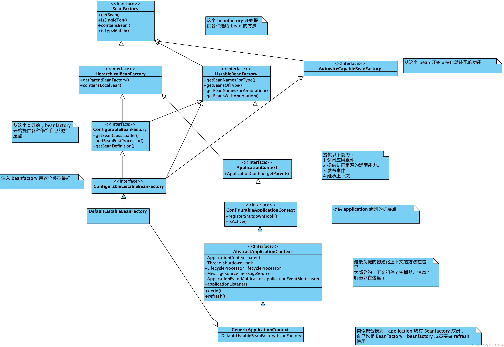

<!DOCTYPE html>
<html>
<head><meta name="generator" content="Hexo 3.9.0">
  <meta charset="utf-8">
  
  <title>Spring IOC | 守株阁</title>
  <meta name="viewport" content="width=device-width, initial-scale=1, maximum-scale=1">
  <meta name="description" content="总体的类图 ResourceSpring 的基本获取 Bean 的形式是获取配置文件（通常是 xml），而读取配置文件，首先要解决资源抽象问题。 public interface Resource {     InputStream getInputStream() throws IOException; }  public class ClassPathResource implements R">
<meta name="keywords" content="Java,Spring">
<meta property="og:type" content="article">
<meta property="og:title" content="Spring IOC">
<meta property="og:url" content="http://yoursite.com/2020/07/19/Spring-IOC/index.html">
<meta property="og:site_name" content="守株阁">
<meta property="og:description" content="总体的类图 ResourceSpring 的基本获取 Bean 的形式是获取配置文件（通常是 xml），而读取配置文件，首先要解决资源抽象问题。 public interface Resource {     InputStream getInputStream() throws IOException; }  public class ClassPathResource implements R">
<meta property="og:locale" content="zh-Hans">
<meta property="og:image" content="http://yoursite.com/2020/07/19/Spring-IOC/spring-aop-proxy-creation.png">
<meta property="og:updated_time" content="2020-07-19T08:16:25.629Z">
<meta name="twitter:card" content="summary">
<meta name="twitter:title" content="Spring IOC">
<meta name="twitter:description" content="总体的类图 ResourceSpring 的基本获取 Bean 的形式是获取配置文件（通常是 xml），而读取配置文件，首先要解决资源抽象问题。 public interface Resource {     InputStream getInputStream() throws IOException; }  public class ClassPathResource implements R">
<meta name="twitter:image" content="http://yoursite.com/2020/07/19/Spring-IOC/spring-aop-proxy-creation.png">
  
    <link rel="alternate" href="/atom.xml" title="守株阁" type="application/atom+xml">
  
  
    <link rel="icon" href="/favicon.png">
  
  
  <link rel="stylesheet" href="/css/style.css">
  

<link rel="stylesheet" href="/css/prism.css" type="text/css">
<link rel="stylesheet" href="/css/prism-line-numbers.css" type="text/css"></head>
</html>
<body>
  <div id="container">
    <div id="wrap">
      <header id="header">
  <div id="banner"></div>
  <div id="header-outer" class="outer">
    
    <div id="header-inner" class="inner">
      <nav id="sub-nav">
        
          <a id="nav-rss-link" class="nav-icon" href="/atom.xml" title="RSS Feed"></a>
        
        <a id="nav-search-btn" class="nav-icon" title="搜索"></a>
      </nav>
      <div id="search-form-wrap">
        <form action="//google.com/search" method="get" accept-charset="UTF-8" class="search-form"><input type="search" name="q" class="search-form-input" placeholder="Search"><button type="submit" class="search-form-submit">&#xF002;</button><input type="hidden" name="sitesearch" value="http://yoursite.com"></form>
      </div>
      <nav id="main-nav">
        <a id="main-nav-toggle" class="nav-icon"></a>
        
          <a class="main-nav-link" href="/">首页</a>
        
          <a class="main-nav-link" href="/archives">归档</a>
        
          <a class="main-nav-link" href="/about">关于</a>
        
      </nav>
      
    </div>
    <div id="header-title" class="inner">
      <h1 id="logo-wrap">
        <a href="/" id="logo">守株阁</a>
      </h1>
      
        <h2 id="subtitle-wrap">
          <a href="/" id="subtitle">一切都是守株待兔，如切如磋，如琢如磨。I am just joking.</a>
        </h2>
      
    </div>
  </div>
</header>
      <div class="outer">
        <section id="main"><article id="post-Spring-IOC" class="article article-type-post" itemscope itemprop="blogPost">
  <div class="article-meta">
    <a href="/2020/07/19/Spring-IOC/" class="article-date">
  <time datetime="2020-07-19T04:03:57.000Z" itemprop="datePublished">2020-07-19</time>
</a>
    
  </div>
  <div class="article-inner">
    
    
      <header class="article-header">
        
  
    <h1 class="article-title" itemprop="name">
      Spring IOC
    </h1>
  

      </header>
    
    <div class="article-entry" itemprop="articleBody">
      
        <!-- Table of Contents -->
        
        <h1 id="总体的类图"><a href="#总体的类图" class="headerlink" title="总体的类图"></a>总体的类图</h1><p></p>
<h1 id="Resource"><a href="#Resource" class="headerlink" title="Resource"></a>Resource</h1><p>Spring 的基本获取 Bean 的形式是获取配置文件（通常是 xml），而读取配置文件，首先要解决资源抽象问题。</p>
<pre class="line-numbers language-java"><code class="language-java"><span class="token keyword">public</span> <span class="token keyword">interface</span> <span class="token class-name">Resource</span> <span class="token punctuation">{</span>
    InputStream <span class="token function">getInputStream</span><span class="token punctuation">(</span><span class="token punctuation">)</span> <span class="token keyword">throws</span> IOException<span class="token punctuation">;</span>
<span class="token punctuation">}</span>

<span class="token keyword">public</span> <span class="token keyword">class</span> <span class="token class-name">ClassPathResource</span> <span class="token keyword">implements</span> <span class="token class-name">Resource</span><span class="token punctuation">{</span>

    <span class="token keyword">private</span> String path<span class="token punctuation">;</span>

    <span class="token keyword">private</span> ClassLoader classLoader<span class="token punctuation">;</span>

    <span class="token keyword">public</span> <span class="token function">ClassPathResource</span><span class="token punctuation">(</span>String path<span class="token punctuation">)</span> <span class="token punctuation">{</span>
        <span class="token keyword">this</span><span class="token punctuation">(</span>path<span class="token punctuation">,</span> <span class="token punctuation">(</span>ClassLoader<span class="token punctuation">)</span>null<span class="token punctuation">)</span><span class="token punctuation">;</span>
    <span class="token punctuation">}</span>

    <span class="token keyword">public</span> <span class="token function">ClassPathResource</span><span class="token punctuation">(</span>String path<span class="token punctuation">,</span> ClassLoader classLoader<span class="token punctuation">)</span> <span class="token punctuation">{</span>
        <span class="token keyword">this</span><span class="token punctuation">.</span>path <span class="token operator">=</span> path<span class="token punctuation">;</span>
        <span class="token keyword">this</span><span class="token punctuation">.</span>classLoader <span class="token operator">=</span> <span class="token punctuation">(</span>classLoader <span class="token operator">!=</span> null <span class="token operator">?</span> classLoader <span class="token operator">:</span> Thread<span class="token punctuation">.</span><span class="token function">currentThread</span><span class="token punctuation">(</span><span class="token punctuation">)</span><span class="token punctuation">.</span><span class="token function">getContextClassLoader</span><span class="token punctuation">(</span><span class="token punctuation">)</span><span class="token punctuation">)</span><span class="token punctuation">;</span>
    <span class="token punctuation">}</span>

    <span class="token annotation punctuation">@Override</span>
    <span class="token keyword">public</span> InputStream <span class="token function">getInputStream</span><span class="token punctuation">(</span><span class="token punctuation">)</span> <span class="token keyword">throws</span> IOException <span class="token punctuation">{</span>
        <span class="token keyword">return</span> classLoader<span class="token punctuation">.</span><span class="token function">getResourceAsStream</span><span class="token punctuation">(</span>path<span class="token punctuation">)</span><span class="token punctuation">;</span>
    <span class="token punctuation">}</span>

    <span class="token comment" spellcheck="true">/**
     * 来自于父类
     * This implementation returns a File reference for the underlying class path
     * resource, provided that it refers to a file in the file system.
     * @see org.springframework.util.ResourceUtils#getFile(java.net.URL, String)
     */</span>
    <span class="token annotation punctuation">@Override</span>
    <span class="token keyword">public</span> File <span class="token function">getFile</span><span class="token punctuation">(</span><span class="token punctuation">)</span> <span class="token keyword">throws</span> IOException <span class="token punctuation">{</span>
        URL url <span class="token operator">=</span> <span class="token function">getURL</span><span class="token punctuation">(</span><span class="token punctuation">)</span><span class="token punctuation">;</span>
        <span class="token keyword">if</span> <span class="token punctuation">(</span>url<span class="token punctuation">.</span><span class="token function">getProtocol</span><span class="token punctuation">(</span><span class="token punctuation">)</span><span class="token punctuation">.</span><span class="token function">startsWith</span><span class="token punctuation">(</span>ResourceUtils<span class="token punctuation">.</span>URL_PROTOCOL_VFS<span class="token punctuation">)</span><span class="token punctuation">)</span> <span class="token punctuation">{</span>
            <span class="token keyword">return</span> VfsResourceDelegate<span class="token punctuation">.</span><span class="token function">getResource</span><span class="token punctuation">(</span>url<span class="token punctuation">)</span><span class="token punctuation">.</span><span class="token function">getFile</span><span class="token punctuation">(</span><span class="token punctuation">)</span><span class="token punctuation">;</span>
        <span class="token punctuation">}</span>
        <span class="token keyword">return</span> ResourceUtils<span class="token punctuation">.</span><span class="token function">getFile</span><span class="token punctuation">(</span>url<span class="token punctuation">,</span> <span class="token function">getDescription</span><span class="token punctuation">(</span><span class="token punctuation">)</span><span class="token punctuation">)</span><span class="token punctuation">;</span>
    <span class="token punctuation">}</span>

<span class="token punctuation">}</span>
<span aria-hidden="true" class="line-numbers-rows"><span></span><span></span><span></span><span></span><span></span><span></span><span></span><span></span><span></span><span></span><span></span><span></span><span></span><span></span><span></span><span></span><span></span><span></span><span></span><span></span><span></span><span></span><span></span><span></span><span></span><span></span><span></span><span></span><span></span><span></span><span></span><span></span><span></span><span></span><span></span><span></span><span></span><span></span><span></span><span></span></span></code></pre>
<p>除了 Resource 以外，还有另一种获取资源的方式，那就是通过 ResourceLoader：</p>
<pre class="line-numbers language-java"><code class="language-java"><span class="token keyword">public</span> <span class="token keyword">class</span> <span class="token class-name">ResourceLoader</span> <span class="token punctuation">{</span>

    <span class="token keyword">final</span> String CLASSPATH_URL_PREFIX <span class="token operator">=</span> <span class="token string">"classpath:"</span><span class="token punctuation">;</span>

    <span class="token keyword">public</span> Resource <span class="token function">getResource</span><span class="token punctuation">(</span>String location<span class="token punctuation">)</span><span class="token punctuation">{</span>
        <span class="token keyword">if</span> <span class="token punctuation">(</span>location<span class="token punctuation">.</span><span class="token function">startsWith</span><span class="token punctuation">(</span>CLASSPATH_URL_PREFIX<span class="token punctuation">)</span><span class="token punctuation">)</span> <span class="token punctuation">{</span>
            <span class="token keyword">return</span> <span class="token keyword">new</span> <span class="token class-name">ClassPathResource</span><span class="token punctuation">(</span>location<span class="token punctuation">.</span><span class="token function">substring</span><span class="token punctuation">(</span>CLASSPATH_URL_PREFIX<span class="token punctuation">.</span><span class="token function">length</span><span class="token punctuation">(</span><span class="token punctuation">)</span><span class="token punctuation">)</span><span class="token punctuation">)</span><span class="token punctuation">;</span>
        <span class="token punctuation">}</span>
        <span class="token keyword">else</span> <span class="token punctuation">{</span>
            <span class="token keyword">return</span> <span class="token keyword">new</span> <span class="token class-name">ClassPathResource</span><span class="token punctuation">(</span>location<span class="token punctuation">)</span><span class="token punctuation">;</span>
        <span class="token punctuation">}</span>
    <span class="token punctuation">}</span>
<span class="token punctuation">}</span>
<span aria-hidden="true" class="line-numbers-rows"><span></span><span></span><span></span><span></span><span></span><span></span><span></span><span></span><span></span><span></span><span></span><span></span><span></span></span></code></pre>
<h1 id="BeanDefinition"><a href="#BeanDefinition" class="headerlink" title="BeanDefinition"></a>BeanDefinition</h1><p>从配置文件里映射出来的数据结构，首先绑定到 BeanDefinition 上：</p>
<pre class="line-numbers language-java"><code class="language-java"><span class="token keyword">public</span> <span class="token keyword">class</span> <span class="token class-name">BeanDefinition</span> <span class="token punctuation">{</span>
    <span class="token comment" spellcheck="true">// bean名称</span>
    <span class="token keyword">private</span> String beanName<span class="token punctuation">;</span>
    <span class="token comment" spellcheck="true">// bean的class对象</span>
    <span class="token keyword">private</span> Class <span class="token class-name">beanClass</span><span class="token punctuation">;</span>
    <span class="token comment" spellcheck="true">// bean的class的包路径</span>
    <span class="token keyword">private</span> String beanClassName<span class="token punctuation">;</span>
    <span class="token comment" spellcheck="true">// bean依赖属性</span>
    <span class="token keyword">private</span> PropertyValues propertyValues <span class="token operator">=</span> <span class="token keyword">new</span> <span class="token class-name">PropertyValues</span><span class="token punctuation">(</span><span class="token punctuation">)</span><span class="token punctuation">;</span>
<span class="token punctuation">}</span>
<span aria-hidden="true" class="line-numbers-rows"><span></span><span></span><span></span><span></span><span></span><span></span><span></span><span></span><span></span><span></span></span></code></pre>
<p>存储属性的地方使用了一个包装器类型来包含属性值列表：</p>
<pre class="line-numbers language-java"><code class="language-java">    <span class="token keyword">private</span> List<span class="token operator">&lt;</span>PropertyValue<span class="token operator">></span> propertyValues <span class="token operator">=</span> <span class="token keyword">new</span> <span class="token class-name">ArrayList</span><span class="token operator">&lt;</span>PropertyValue<span class="token operator">></span><span class="token punctuation">(</span><span class="token punctuation">)</span><span class="token punctuation">;</span>

    <span class="token keyword">public</span> <span class="token keyword">void</span> <span class="token function">addPropertyValue</span><span class="token punctuation">(</span>PropertyValue propertyValue<span class="token punctuation">)</span><span class="token punctuation">{</span>
        propertyValues<span class="token punctuation">.</span><span class="token function">add</span><span class="token punctuation">(</span>propertyValue<span class="token punctuation">)</span><span class="token punctuation">;</span>
    <span class="token punctuation">}</span>

    <span class="token keyword">public</span> List<span class="token operator">&lt;</span>PropertyValue<span class="token operator">></span> <span class="token function">getPropertyValues</span><span class="token punctuation">(</span><span class="token punctuation">)</span><span class="token punctuation">{</span>
        <span class="token keyword">return</span> <span class="token keyword">this</span><span class="token punctuation">.</span>propertyValues<span class="token punctuation">;</span>
    <span class="token punctuation">}</span>
<span class="token punctuation">}</span>

<span class="token comment" spellcheck="true">/**
 * 这个 kv 值是可以被直接使用的
 */</span>
<span class="token keyword">public</span> <span class="token keyword">class</span> <span class="token class-name">PropertyValue</span> <span class="token punctuation">{</span>
    <span class="token keyword">private</span> <span class="token keyword">final</span> String name<span class="token punctuation">;</span>
    <span class="token keyword">private</span> <span class="token keyword">final</span> Object value<span class="token punctuation">;</span>

    <span class="token keyword">public</span> <span class="token function">PropertyValue</span><span class="token punctuation">(</span>String name<span class="token punctuation">,</span> Object value<span class="token punctuation">)</span> <span class="token punctuation">{</span>
        <span class="token keyword">this</span><span class="token punctuation">.</span>name <span class="token operator">=</span> name<span class="token punctuation">;</span>
        <span class="token keyword">this</span><span class="token punctuation">.</span>value <span class="token operator">=</span> value<span class="token punctuation">;</span>
    <span class="token punctuation">}</span>
    <span class="token keyword">public</span> String <span class="token function">getName</span><span class="token punctuation">(</span><span class="token punctuation">)</span> <span class="token punctuation">{</span>
        <span class="token keyword">return</span> name<span class="token punctuation">;</span>
    <span class="token punctuation">}</span>
    <span class="token keyword">public</span> Object <span class="token function">getValue</span><span class="token punctuation">(</span><span class="token punctuation">)</span> <span class="token punctuation">{</span>
        <span class="token keyword">return</span> value<span class="token punctuation">;</span>
    <span class="token punctuation">}</span>
<span class="token punctuation">}</span>

<span aria-hidden="true" class="line-numbers-rows"><span></span><span></span><span></span><span></span><span></span><span></span><span></span><span></span><span></span><span></span><span></span><span></span><span></span><span></span><span></span><span></span><span></span><span></span><span></span><span></span><span></span><span></span><span></span><span></span><span></span><span></span><span></span><span></span><span></span><span></span></span></code></pre>
<h1 id="XmlBeanDefinitionReader"><a href="#XmlBeanDefinitionReader" class="headerlink" title="XmlBeanDefinitionReader"></a>XmlBeanDefinitionReader</h1><p>ResourceLoader + BeanDefinition + BeanDefinitionRegistry= BeanDefinitionReader，比如 XmlBeanDefinitionReader：</p>
<pre class="line-numbers language-java"><code class="language-java"><span class="token keyword">public</span> <span class="token keyword">class</span> <span class="token class-name">XmlBeanDefinitionReader</span> <span class="token keyword">implements</span> <span class="token class-name">BeanDefinitionReader</span><span class="token punctuation">{</span>
    <span class="token comment" spellcheck="true">// BeanDefinition注册到BeanFactory接口</span>
    <span class="token keyword">private</span> BeanDefinitionRegistry registry<span class="token punctuation">;</span>
    <span class="token comment" spellcheck="true">// 资源载入类</span>
    <span class="token keyword">private</span> ResourceLoader resourceLoader<span class="token punctuation">;</span>

    <span class="token keyword">public</span> <span class="token function">XmlBeanDefinitionReader</span><span class="token punctuation">(</span>BeanDefinitionRegistry registry<span class="token punctuation">,</span> ResourceLoader resourceLoader<span class="token punctuation">)</span> <span class="token punctuation">{</span>
        <span class="token keyword">this</span><span class="token punctuation">.</span>registry <span class="token operator">=</span> registry<span class="token punctuation">;</span>
        <span class="token keyword">this</span><span class="token punctuation">.</span>resourceLoader <span class="token operator">=</span> resourceLoader<span class="token punctuation">;</span>
    <span class="token punctuation">}</span>

    <span class="token annotation punctuation">@Override</span>
    <span class="token keyword">public</span> <span class="token keyword">void</span> <span class="token function">loadBeanDefinitions</span><span class="token punctuation">(</span>String location<span class="token punctuation">)</span> <span class="token keyword">throws</span> Exception<span class="token punctuation">{</span>
        InputStream is <span class="token operator">=</span> <span class="token function">getResourceLoader</span><span class="token punctuation">(</span><span class="token punctuation">)</span><span class="token punctuation">.</span><span class="token function">getResource</span><span class="token punctuation">(</span>location<span class="token punctuation">)</span><span class="token punctuation">.</span><span class="token function">getInputStream</span><span class="token punctuation">(</span><span class="token punctuation">)</span><span class="token punctuation">;</span>
        <span class="token function">doLoadBeanDefinitions</span><span class="token punctuation">(</span>is<span class="token punctuation">)</span><span class="token punctuation">;</span>
    <span class="token punctuation">}</span>

    <span class="token keyword">public</span> BeanDefinitionRegistry <span class="token function">getRegistry</span><span class="token punctuation">(</span><span class="token punctuation">)</span><span class="token punctuation">{</span>
        <span class="token keyword">return</span> registry<span class="token punctuation">;</span>
    <span class="token punctuation">}</span>

    <span class="token keyword">public</span> ResourceLoader <span class="token function">getResourceLoader</span><span class="token punctuation">(</span><span class="token punctuation">)</span><span class="token punctuation">{</span>
        <span class="token keyword">return</span> resourceLoader<span class="token punctuation">;</span>
    <span class="token punctuation">}</span>
<span class="token punctuation">}</span>

<span class="token keyword">protected</span> <span class="token keyword">void</span> <span class="token function">doLoadBeanDefinitions</span><span class="token punctuation">(</span>InputStream is<span class="token punctuation">)</span> <span class="token keyword">throws</span> Exception <span class="token punctuation">{</span>
    <span class="token comment" spellcheck="true">// 1. 获取 document的 factory</span>
    DocumentBuilderFactory factory <span class="token operator">=</span> DocumentBuilderFactory<span class="token punctuation">.</span><span class="token function">newInstance</span><span class="token punctuation">(</span><span class="token punctuation">)</span><span class="token punctuation">;</span>
    DocumentBuilder builder <span class="token operator">=</span> factory<span class="token punctuation">.</span><span class="token function">newDocumentBuilder</span><span class="token punctuation">(</span><span class="token punctuation">)</span><span class="token punctuation">;</span>
    <span class="token comment" spellcheck="true">// 2. 把资源转化为 w3c 规定的 document</span>
    Document document <span class="token operator">=</span> builder<span class="token punctuation">.</span><span class="token function">parse</span><span class="token punctuation">(</span>is<span class="token punctuation">)</span><span class="token punctuation">;</span>
    <span class="token comment" spellcheck="true">// 3. 注册 bean 定义</span>
    <span class="token function">registerBeanDefinitions</span><span class="token punctuation">(</span>document<span class="token punctuation">)</span><span class="token punctuation">;</span>
    is<span class="token punctuation">.</span><span class="token function">close</span><span class="token punctuation">(</span><span class="token punctuation">)</span><span class="token punctuation">;</span>
<span class="token punctuation">}</span>

<span class="token keyword">protected</span> <span class="token keyword">void</span> <span class="token function">registerBeanDefinitions</span><span class="token punctuation">(</span>Document document<span class="token punctuation">)</span> <span class="token punctuation">{</span>
    <span class="token comment" spellcheck="true">// 1. 取出根</span>
    Element root <span class="token operator">=</span> document<span class="token punctuation">.</span><span class="token function">getDocumentElement</span><span class="token punctuation">(</span><span class="token punctuation">)</span><span class="token punctuation">;</span>
    <span class="token comment" spellcheck="true">// 2. 通过遍历根 </span>
    <span class="token function">parseBeanDefinitions</span><span class="token punctuation">(</span>root<span class="token punctuation">)</span><span class="token punctuation">;</span>
<span class="token punctuation">}</span>


<span class="token keyword">protected</span> <span class="token keyword">void</span> <span class="token function">processBeanDefinition</span><span class="token punctuation">(</span>Element ele<span class="token punctuation">)</span> <span class="token punctuation">{</span>
    String name <span class="token operator">=</span> ele<span class="token punctuation">.</span><span class="token function">getAttribute</span><span class="token punctuation">(</span><span class="token string">"id"</span><span class="token punctuation">)</span><span class="token punctuation">;</span>
    String className <span class="token operator">=</span> ele<span class="token punctuation">.</span><span class="token function">getAttribute</span><span class="token punctuation">(</span><span class="token string">"class"</span><span class="token punctuation">)</span><span class="token punctuation">;</span>
    <span class="token keyword">if</span><span class="token punctuation">(</span>className<span class="token operator">==</span>null <span class="token operator">||</span> className<span class="token punctuation">.</span><span class="token function">length</span><span class="token punctuation">(</span><span class="token punctuation">)</span><span class="token operator">==</span><span class="token number">0</span><span class="token punctuation">)</span><span class="token punctuation">{</span>
        <span class="token keyword">throw</span> <span class="token keyword">new</span> <span class="token class-name">IllegalArgumentException</span><span class="token punctuation">(</span><span class="token string">"Configuration exception: &lt;bean> element must has class attribute."</span><span class="token punctuation">)</span><span class="token punctuation">;</span>
    <span class="token punctuation">}</span>
    <span class="token keyword">if</span><span class="token punctuation">(</span>name<span class="token operator">==</span>null<span class="token operator">||</span>name<span class="token punctuation">.</span><span class="token function">length</span><span class="token punctuation">(</span><span class="token punctuation">)</span><span class="token operator">==</span><span class="token number">0</span><span class="token punctuation">)</span><span class="token punctuation">{</span>
        name <span class="token operator">=</span> className<span class="token punctuation">;</span>
    <span class="token punctuation">}</span>
    <span class="token comment" spellcheck="true">// 实际上也是用 new 方法来生成 beanDefinition，把 attribute 转换成为 BeanDefinition 的属性</span>
    BeanDefinition beanDefinition <span class="token operator">=</span> <span class="token keyword">new</span> <span class="token class-name">BeanDefinition</span><span class="token punctuation">(</span><span class="token punctuation">)</span><span class="token punctuation">;</span>
    beanDefinition<span class="token punctuation">.</span><span class="token function">setBeanClassName</span><span class="token punctuation">(</span>className<span class="token punctuation">)</span><span class="token punctuation">;</span>
    <span class="token function">processBeanProperty</span><span class="token punctuation">(</span>ele<span class="token punctuation">,</span>beanDefinition<span class="token punctuation">)</span><span class="token punctuation">;</span>
    <span class="token function">getRegistry</span><span class="token punctuation">(</span><span class="token punctuation">)</span><span class="token punctuation">.</span><span class="token function">registerBeanDefinition</span><span class="token punctuation">(</span>name<span class="token punctuation">,</span> beanDefinition<span class="token punctuation">)</span><span class="token punctuation">;</span>
<span class="token punctuation">}</span>

<span class="token keyword">protected</span> <span class="token keyword">void</span> <span class="token function">processBeanProperty</span><span class="token punctuation">(</span>Element ele<span class="token punctuation">,</span> BeanDefinition beanDefinition<span class="token punctuation">)</span> <span class="token punctuation">{</span>
        NodeList childs <span class="token operator">=</span> ele<span class="token punctuation">.</span><span class="token function">getElementsByTagName</span><span class="token punctuation">(</span><span class="token string">"property"</span><span class="token punctuation">)</span><span class="token punctuation">;</span>
        <span class="token keyword">for</span> <span class="token punctuation">(</span><span class="token keyword">int</span> i <span class="token operator">=</span> <span class="token number">0</span><span class="token punctuation">;</span> i <span class="token operator">&lt;</span> childs<span class="token punctuation">.</span><span class="token function">getLength</span><span class="token punctuation">(</span><span class="token punctuation">)</span><span class="token punctuation">;</span> i<span class="token operator">++</span><span class="token punctuation">)</span> <span class="token punctuation">{</span>
            Node node <span class="token operator">=</span> childs<span class="token punctuation">.</span><span class="token function">item</span><span class="token punctuation">(</span>i<span class="token punctuation">)</span><span class="token punctuation">;</span>
            <span class="token keyword">if</span><span class="token punctuation">(</span>node <span class="token keyword">instanceof</span> <span class="token class-name">Element</span><span class="token punctuation">)</span><span class="token punctuation">{</span>
                Element property <span class="token operator">=</span> <span class="token punctuation">(</span>Element<span class="token punctuation">)</span>node<span class="token punctuation">;</span>
                <span class="token comment" spellcheck="true">// 把内部的 attribute 转换为 PropertyValues</span>
                String name <span class="token operator">=</span> property<span class="token punctuation">.</span><span class="token function">getAttribute</span><span class="token punctuation">(</span><span class="token string">"name"</span><span class="token punctuation">)</span><span class="token punctuation">;</span>
                String value <span class="token operator">=</span> property<span class="token punctuation">.</span><span class="token function">getAttribute</span><span class="token punctuation">(</span><span class="token string">"value"</span><span class="token punctuation">)</span><span class="token punctuation">;</span>
                <span class="token keyword">if</span><span class="token punctuation">(</span>value<span class="token operator">!=</span>null <span class="token operator">&amp;&amp;</span> value<span class="token punctuation">.</span><span class="token function">length</span><span class="token punctuation">(</span><span class="token punctuation">)</span><span class="token operator">></span><span class="token number">0</span><span class="token punctuation">)</span><span class="token punctuation">{</span>
                    beanDefinition<span class="token punctuation">.</span><span class="token function">getPropertyValues</span><span class="token punctuation">(</span><span class="token punctuation">)</span><span class="token punctuation">.</span><span class="token function">addPropertyValue</span><span class="token punctuation">(</span><span class="token keyword">new</span> <span class="token class-name">PropertyValue</span><span class="token punctuation">(</span>name<span class="token punctuation">,</span> value<span class="token punctuation">)</span><span class="token punctuation">)</span><span class="token punctuation">;</span>
                <span class="token punctuation">}</span><span class="token keyword">else</span><span class="token punctuation">{</span>
                    String ref <span class="token operator">=</span> property<span class="token punctuation">.</span><span class="token function">getAttribute</span><span class="token punctuation">(</span><span class="token string">"ref"</span><span class="token punctuation">)</span><span class="token punctuation">;</span>
                    <span class="token keyword">if</span><span class="token punctuation">(</span>ref<span class="token operator">==</span>null <span class="token operator">||</span> ref<span class="token punctuation">.</span><span class="token function">length</span><span class="token punctuation">(</span><span class="token punctuation">)</span><span class="token operator">==</span><span class="token number">0</span><span class="token punctuation">)</span><span class="token punctuation">{</span>
                        <span class="token keyword">throw</span> <span class="token keyword">new</span> <span class="token class-name">IllegalArgumentException</span><span class="token punctuation">(</span><span class="token string">"Configuration problem: &lt;property> element for "</span><span class="token operator">+</span>
                                name<span class="token operator">+</span><span class="token string">" must specify a value or ref."</span><span class="token punctuation">)</span><span class="token punctuation">;</span>
                    <span class="token punctuation">}</span>
                    BeanReference reference <span class="token operator">=</span> <span class="token keyword">new</span> <span class="token class-name">BeanReference</span><span class="token punctuation">(</span>ref<span class="token punctuation">)</span><span class="token punctuation">;</span>
                    beanDefinition<span class="token punctuation">.</span><span class="token function">getPropertyValues</span><span class="token punctuation">(</span><span class="token punctuation">)</span><span class="token punctuation">.</span><span class="token function">addPropertyValue</span><span class="token punctuation">(</span><span class="token keyword">new</span> <span class="token class-name">PropertyValue</span><span class="token punctuation">(</span>name<span class="token punctuation">,</span> reference<span class="token punctuation">)</span><span class="token punctuation">)</span><span class="token punctuation">;</span>
                <span class="token punctuation">}</span>
            <span class="token punctuation">}</span>
        <span class="token punctuation">}</span>
    <span class="token punctuation">}</span>
<span aria-hidden="true" class="line-numbers-rows"><span></span><span></span><span></span><span></span><span></span><span></span><span></span><span></span><span></span><span></span><span></span><span></span><span></span><span></span><span></span><span></span><span></span><span></span><span></span><span></span><span></span><span></span><span></span><span></span><span></span><span></span><span></span><span></span><span></span><span></span><span></span><span></span><span></span><span></span><span></span><span></span><span></span><span></span><span></span><span></span><span></span><span></span><span></span><span></span><span></span><span></span><span></span><span></span><span></span><span></span><span></span><span></span><span></span><span></span><span></span><span></span><span></span><span></span><span></span><span></span><span></span><span></span><span></span><span></span><span></span><span></span><span></span><span></span><span></span><span></span><span></span><span></span><span></span><span></span><span></span><span></span><span></span><span></span><span></span><span></span><span></span><span></span><span></span><span></span></span></code></pre>
<p>而 BeanDefinitionRegistry 则是另一个维护 map 的接口：</p>
<pre class="line-numbers language-java"><code class="language-java"><span class="token keyword">public</span> <span class="token keyword">interface</span> <span class="token class-name">BeanDefinitionRegistry</span> <span class="token punctuation">{</span>
    <span class="token keyword">void</span> <span class="token function">registerBeanDefinition</span><span class="token punctuation">(</span>String beanName<span class="token punctuation">,</span> BeanDefinition beanDefinition<span class="token punctuation">)</span><span class="token punctuation">;</span>
<span class="token punctuation">}</span>
<span aria-hidden="true" class="line-numbers-rows"><span></span><span></span><span></span></span></code></pre>
<p>通常 BeanDefinitionRegistry 和 BeanFactory 被实现在同一个实现里：</p>
<pre class="line-numbers language-java"><code class="language-java"><span class="token keyword">public</span> <span class="token keyword">class</span> <span class="token class-name">DefaultListableBeanFactory</span> <span class="token keyword">extends</span> <span class="token class-name">AbstractBeanFactory</span> <span class="token keyword">implements</span> <span class="token class-name">ConfigurableListableBeanFactory</span><span class="token punctuation">,</span>BeanDefinitionRegistry<span class="token punctuation">{</span>

    <span class="token keyword">private</span> Map<span class="token operator">&lt;</span>String<span class="token punctuation">,</span> BeanDefinition<span class="token operator">></span> beanDefinitionMap <span class="token operator">=</span> <span class="token keyword">new</span> <span class="token class-name">ConcurrentHashMap</span><span class="token operator">&lt;</span>String<span class="token punctuation">,</span> BeanDefinition<span class="token operator">></span><span class="token punctuation">(</span><span class="token punctuation">)</span><span class="token punctuation">;</span>
    <span class="token keyword">private</span> List<span class="token operator">&lt;</span>String<span class="token operator">></span> beanDefinitionNames <span class="token operator">=</span> <span class="token keyword">new</span> <span class="token class-name">ArrayList</span><span class="token operator">&lt;</span>String<span class="token operator">></span><span class="token punctuation">(</span><span class="token punctuation">)</span><span class="token punctuation">;</span>

    <span class="token keyword">public</span> <span class="token keyword">void</span> <span class="token function">registerBeanDefinition</span><span class="token punctuation">(</span>String beanName<span class="token punctuation">,</span>BeanDefinition beanDefinition<span class="token punctuation">)</span><span class="token punctuation">{</span>
        beanDefinitionMap<span class="token punctuation">.</span><span class="token function">put</span><span class="token punctuation">(</span>beanName<span class="token punctuation">,</span> beanDefinition<span class="token punctuation">)</span><span class="token punctuation">;</span>
        beanDefinitionNames<span class="token punctuation">.</span><span class="token function">add</span><span class="token punctuation">(</span>beanName<span class="token punctuation">)</span><span class="token punctuation">;</span>
    <span class="token punctuation">}</span>
<span class="token punctuation">}</span>
<span aria-hidden="true" class="line-numbers-rows"><span></span><span></span><span></span><span></span><span></span><span></span><span></span><span></span><span></span><span></span></span></code></pre>
<h1 id="BeanFactory"><a href="#BeanFactory" class="headerlink" title="BeanFactory"></a>BeanFactory</h1><p>BeanFactory 自有其继承体系：</p>
<pre class="line-numbers language-java"><code class="language-java"><span class="token keyword">public</span> <span class="token keyword">interface</span> <span class="token class-name">BeanFactory</span> <span class="token punctuation">{</span>

    Object <span class="token function">getBean</span><span class="token punctuation">(</span>String beanName<span class="token punctuation">)</span><span class="token punctuation">;</span>
<span class="token punctuation">}</span>

<span class="token comment" spellcheck="true">// 这个抽象类是整个模板方法里最重要的</span>
<span class="token keyword">public</span> <span class="token keyword">abstract</span> <span class="token keyword">class</span> <span class="token class-name">AbstractBeanFactory</span> <span class="token keyword">implements</span> <span class="token class-name">ConfigurableListableBeanFactory</span> <span class="token punctuation">{</span>
    <span class="token keyword">private</span> Map<span class="token operator">&lt;</span>String<span class="token punctuation">,</span> Object<span class="token operator">></span> singleObjects <span class="token operator">=</span> <span class="token keyword">new</span> <span class="token class-name">ConcurrentHashMap</span><span class="token operator">&lt;</span>String<span class="token punctuation">,</span> Object<span class="token operator">></span><span class="token punctuation">(</span><span class="token punctuation">)</span><span class="token punctuation">;</span>

    <span class="token keyword">protected</span> <span class="token keyword">abstract</span> BeanDefinition <span class="token function">getBeanDefinitionByName</span><span class="token punctuation">(</span>String beanName<span class="token punctuation">)</span><span class="token punctuation">;</span>

    <span class="token comment" spellcheck="true">// 所有的创建 bean 的方法的入口</span>
    <span class="token keyword">protected</span> Object <span class="token function">createInstance</span><span class="token punctuation">(</span>BeanDefinition beanDefinition<span class="token punctuation">)</span> <span class="token punctuation">{</span>
    <span class="token keyword">try</span> <span class="token punctuation">{</span>
        <span class="token keyword">if</span><span class="token punctuation">(</span>beanDefinition<span class="token punctuation">.</span><span class="token function">getBeanClass</span><span class="token punctuation">(</span><span class="token punctuation">)</span> <span class="token operator">!=</span> null<span class="token punctuation">)</span><span class="token punctuation">{</span>
            <span class="token keyword">return</span> beanDefinition<span class="token punctuation">.</span><span class="token function">getBeanClass</span><span class="token punctuation">(</span><span class="token punctuation">)</span><span class="token punctuation">.</span><span class="token function">newInstance</span><span class="token punctuation">(</span><span class="token punctuation">)</span><span class="token punctuation">;</span>
        <span class="token punctuation">}</span><span class="token keyword">else</span> <span class="token keyword">if</span><span class="token punctuation">(</span>beanDefinition<span class="token punctuation">.</span><span class="token function">getBeanClassName</span><span class="token punctuation">(</span><span class="token punctuation">)</span> <span class="token operator">!=</span> null<span class="token punctuation">)</span><span class="token punctuation">{</span>
            <span class="token keyword">try</span> <span class="token punctuation">{</span>
                Class <span class="token class-name">clazz</span> <span class="token operator">=</span> Class<span class="token punctuation">.</span><span class="token function">forName</span><span class="token punctuation">(</span>beanDefinition<span class="token punctuation">.</span><span class="token function">getBeanClassName</span><span class="token punctuation">(</span><span class="token punctuation">)</span><span class="token punctuation">)</span><span class="token punctuation">;</span>
                beanDefinition<span class="token punctuation">.</span><span class="token function">setBeanClass</span><span class="token punctuation">(</span>clazz<span class="token punctuation">)</span><span class="token punctuation">;</span>
                <span class="token keyword">return</span> clazz<span class="token punctuation">.</span><span class="token function">newInstance</span><span class="token punctuation">(</span><span class="token punctuation">)</span><span class="token punctuation">;</span>
            <span class="token punctuation">}</span> <span class="token keyword">catch</span> <span class="token punctuation">(</span><span class="token class-name">ClassNotFoundException</span> e<span class="token punctuation">)</span> <span class="token punctuation">{</span>
                <span class="token keyword">throw</span> <span class="token keyword">new</span> <span class="token class-name">RuntimeException</span><span class="token punctuation">(</span><span class="token string">"bean Class "</span> <span class="token operator">+</span> beanDefinition<span class="token punctuation">.</span><span class="token function">getBeanClassName</span><span class="token punctuation">(</span><span class="token punctuation">)</span> <span class="token operator">+</span> <span class="token string">" not found"</span><span class="token punctuation">)</span><span class="token punctuation">;</span>
            <span class="token punctuation">}</span>
        <span class="token punctuation">}</span>
    <span class="token punctuation">}</span> <span class="token keyword">catch</span> <span class="token punctuation">(</span><span class="token class-name">Exception</span> e<span class="token punctuation">)</span> <span class="token punctuation">{</span>
        <span class="token keyword">throw</span> <span class="token keyword">new</span> <span class="token class-name">RuntimeException</span><span class="token punctuation">(</span><span class="token string">"create bean "</span> <span class="token operator">+</span> beanDefinition<span class="token punctuation">.</span><span class="token function">getBeanName</span><span class="token punctuation">(</span><span class="token punctuation">)</span> <span class="token operator">+</span> <span class="token string">" failed"</span><span class="token punctuation">)</span><span class="token punctuation">;</span>
    <span class="token punctuation">}</span> 
    <span class="token keyword">throw</span> <span class="token keyword">new</span> <span class="token class-name">RuntimeException</span><span class="token punctuation">(</span><span class="token string">"bean name for "</span> <span class="token operator">+</span> beanDefinition<span class="token punctuation">.</span><span class="token function">getBeanName</span><span class="token punctuation">(</span><span class="token punctuation">)</span> <span class="token operator">+</span> <span class="token string">" not define bean class"</span><span class="token punctuation">)</span><span class="token punctuation">;</span>
<span class="token punctuation">}</span>

    <span class="token comment" spellcheck="true">/**
     * 从 bean definition 里生成 bean，这个方法在 getBean 里才执行，它可以被优化成一个惰性求值的方法
     * Return an instance, which may be shared or independent, of the specified bean.
     * @param name the name of the bean to retrieve
     * @param requiredType the required type of the bean to retrieve
     * @param args arguments to use when creating a bean instance using explicit arguments
     * (only applied when creating a new instance as opposed to retrieving an existing one)
     * @param typeCheckOnly whether the instance is obtained for a type check,
     * not for actual use
     * @return an instance of the bean
     * @throws BeansException if the bean could not be created
     */</span>
    <span class="token annotation punctuation">@SuppressWarnings</span><span class="token punctuation">(</span><span class="token string">"unchecked"</span><span class="token punctuation">)</span>
    <span class="token keyword">protected</span> <span class="token operator">&lt;</span>T<span class="token operator">></span> T <span class="token function">doGetBean</span><span class="token punctuation">(</span><span class="token keyword">final</span> String name<span class="token punctuation">,</span> <span class="token annotation punctuation">@Nullable</span> <span class="token keyword">final</span> Class<span class="token operator">&lt;</span>T<span class="token operator">></span> requiredType<span class="token punctuation">,</span>
            <span class="token annotation punctuation">@Nullable</span> <span class="token keyword">final</span> Object<span class="token punctuation">[</span><span class="token punctuation">]</span> args<span class="token punctuation">,</span> <span class="token keyword">boolean</span> typeCheckOnly<span class="token punctuation">)</span> <span class="token keyword">throws</span> BeansException <span class="token punctuation">{</span>

        <span class="token keyword">final</span> String beanName <span class="token operator">=</span> <span class="token function">transformedBeanName</span><span class="token punctuation">(</span>name<span class="token punctuation">)</span><span class="token punctuation">;</span>
        Object bean<span class="token punctuation">;</span>

        <span class="token comment" spellcheck="true">// Eagerly check singleton cache for manually registered singletons.</span>
        Object sharedInstance <span class="token operator">=</span> <span class="token function">getSingleton</span><span class="token punctuation">(</span>beanName<span class="token punctuation">)</span><span class="token punctuation">;</span>
        <span class="token keyword">if</span> <span class="token punctuation">(</span>sharedInstance <span class="token operator">!=</span> null <span class="token operator">&amp;&amp;</span> args <span class="token operator">==</span> null<span class="token punctuation">)</span> <span class="token punctuation">{</span>
            <span class="token keyword">if</span> <span class="token punctuation">(</span>logger<span class="token punctuation">.</span><span class="token function">isTraceEnabled</span><span class="token punctuation">(</span><span class="token punctuation">)</span><span class="token punctuation">)</span> <span class="token punctuation">{</span>
                <span class="token keyword">if</span> <span class="token punctuation">(</span><span class="token function">isSingletonCurrentlyInCreation</span><span class="token punctuation">(</span>beanName<span class="token punctuation">)</span><span class="token punctuation">)</span> <span class="token punctuation">{</span>
                    logger<span class="token punctuation">.</span><span class="token function">trace</span><span class="token punctuation">(</span><span class="token string">"Returning eagerly cached instance of singleton bean '"</span> <span class="token operator">+</span> beanName <span class="token operator">+</span>
                            <span class="token string">"' that is not fully initialized yet - a consequence of a circular reference"</span><span class="token punctuation">)</span><span class="token punctuation">;</span>
                <span class="token punctuation">}</span>
                <span class="token keyword">else</span> <span class="token punctuation">{</span>
                    logger<span class="token punctuation">.</span><span class="token function">trace</span><span class="token punctuation">(</span><span class="token string">"Returning cached instance of singleton bean '"</span> <span class="token operator">+</span> beanName <span class="token operator">+</span> <span class="token string">"'"</span><span class="token punctuation">)</span><span class="token punctuation">;</span>
                <span class="token punctuation">}</span>
            <span class="token punctuation">}</span>
            bean <span class="token operator">=</span> <span class="token function">getObjectForBeanInstance</span><span class="token punctuation">(</span>sharedInstance<span class="token punctuation">,</span> name<span class="token punctuation">,</span> beanName<span class="token punctuation">,</span> null<span class="token punctuation">)</span><span class="token punctuation">;</span>
        <span class="token punctuation">}</span>

        <span class="token keyword">else</span> <span class="token punctuation">{</span>
            <span class="token comment" spellcheck="true">// Fail if we're already creating this bean instance:</span>
            <span class="token comment" spellcheck="true">// We're assumably within a circular reference.</span>
            <span class="token keyword">if</span> <span class="token punctuation">(</span><span class="token function">isPrototypeCurrentlyInCreation</span><span class="token punctuation">(</span>beanName<span class="token punctuation">)</span><span class="token punctuation">)</span> <span class="token punctuation">{</span>
                <span class="token keyword">throw</span> <span class="token keyword">new</span> <span class="token class-name">BeanCurrentlyInCreationException</span><span class="token punctuation">(</span>beanName<span class="token punctuation">)</span><span class="token punctuation">;</span>
            <span class="token punctuation">}</span>

            <span class="token comment" spellcheck="true">// Check if bean definition exists in this factory.</span>
            BeanFactory parentBeanFactory <span class="token operator">=</span> <span class="token function">getParentBeanFactory</span><span class="token punctuation">(</span><span class="token punctuation">)</span><span class="token punctuation">;</span>
            <span class="token keyword">if</span> <span class="token punctuation">(</span>parentBeanFactory <span class="token operator">!=</span> null <span class="token operator">&amp;&amp;</span> <span class="token operator">!</span><span class="token function">containsBeanDefinition</span><span class="token punctuation">(</span>beanName<span class="token punctuation">)</span><span class="token punctuation">)</span> <span class="token punctuation">{</span>
                <span class="token comment" spellcheck="true">// Not found -> check parent.</span>
                String nameToLookup <span class="token operator">=</span> <span class="token function">originalBeanName</span><span class="token punctuation">(</span>name<span class="token punctuation">)</span><span class="token punctuation">;</span>
                <span class="token keyword">if</span> <span class="token punctuation">(</span>parentBeanFactory <span class="token keyword">instanceof</span> <span class="token class-name">AbstractBeanFactory</span><span class="token punctuation">)</span> <span class="token punctuation">{</span>
                    <span class="token keyword">return</span> <span class="token punctuation">(</span><span class="token punctuation">(</span>AbstractBeanFactory<span class="token punctuation">)</span> parentBeanFactory<span class="token punctuation">)</span><span class="token punctuation">.</span><span class="token function">doGetBean</span><span class="token punctuation">(</span>
                            nameToLookup<span class="token punctuation">,</span> requiredType<span class="token punctuation">,</span> args<span class="token punctuation">,</span> typeCheckOnly<span class="token punctuation">)</span><span class="token punctuation">;</span>
                <span class="token punctuation">}</span>
                <span class="token keyword">else</span> <span class="token keyword">if</span> <span class="token punctuation">(</span>args <span class="token operator">!=</span> null<span class="token punctuation">)</span> <span class="token punctuation">{</span>
                    <span class="token comment" spellcheck="true">// Delegation to parent with explicit args.</span>
                    <span class="token keyword">return</span> <span class="token punctuation">(</span>T<span class="token punctuation">)</span> parentBeanFactory<span class="token punctuation">.</span><span class="token function">getBean</span><span class="token punctuation">(</span>nameToLookup<span class="token punctuation">,</span> args<span class="token punctuation">)</span><span class="token punctuation">;</span>
                <span class="token punctuation">}</span>
                <span class="token keyword">else</span> <span class="token keyword">if</span> <span class="token punctuation">(</span>requiredType <span class="token operator">!=</span> null<span class="token punctuation">)</span> <span class="token punctuation">{</span>
                    <span class="token comment" spellcheck="true">// No args -> delegate to standard getBean method.</span>
                    <span class="token keyword">return</span> parentBeanFactory<span class="token punctuation">.</span><span class="token function">getBean</span><span class="token punctuation">(</span>nameToLookup<span class="token punctuation">,</span> requiredType<span class="token punctuation">)</span><span class="token punctuation">;</span>
                <span class="token punctuation">}</span>
                <span class="token keyword">else</span> <span class="token punctuation">{</span>
                    <span class="token keyword">return</span> <span class="token punctuation">(</span>T<span class="token punctuation">)</span> parentBeanFactory<span class="token punctuation">.</span><span class="token function">getBean</span><span class="token punctuation">(</span>nameToLookup<span class="token punctuation">)</span><span class="token punctuation">;</span>
                <span class="token punctuation">}</span>
            <span class="token punctuation">}</span>

            <span class="token keyword">if</span> <span class="token punctuation">(</span><span class="token operator">!</span>typeCheckOnly<span class="token punctuation">)</span> <span class="token punctuation">{</span>
                <span class="token function">markBeanAsCreated</span><span class="token punctuation">(</span>beanName<span class="token punctuation">)</span><span class="token punctuation">;</span>
            <span class="token punctuation">}</span>

            <span class="token keyword">try</span> <span class="token punctuation">{</span>
                <span class="token keyword">final</span> RootBeanDefinition mbd <span class="token operator">=</span> <span class="token function">getMergedLocalBeanDefinition</span><span class="token punctuation">(</span>beanName<span class="token punctuation">)</span><span class="token punctuation">;</span>
                <span class="token function">checkMergedBeanDefinition</span><span class="token punctuation">(</span>mbd<span class="token punctuation">,</span> beanName<span class="token punctuation">,</span> args<span class="token punctuation">)</span><span class="token punctuation">;</span>

                <span class="token comment" spellcheck="true">// Guarantee initialization of beans that the current bean depends on.</span>
                String<span class="token punctuation">[</span><span class="token punctuation">]</span> dependsOn <span class="token operator">=</span> mbd<span class="token punctuation">.</span><span class="token function">getDependsOn</span><span class="token punctuation">(</span><span class="token punctuation">)</span><span class="token punctuation">;</span>
                <span class="token keyword">if</span> <span class="token punctuation">(</span>dependsOn <span class="token operator">!=</span> null<span class="token punctuation">)</span> <span class="token punctuation">{</span>
                    <span class="token keyword">for</span> <span class="token punctuation">(</span>String dep <span class="token operator">:</span> dependsOn<span class="token punctuation">)</span> <span class="token punctuation">{</span>
                        <span class="token keyword">if</span> <span class="token punctuation">(</span><span class="token function">isDependent</span><span class="token punctuation">(</span>beanName<span class="token punctuation">,</span> dep<span class="token punctuation">)</span><span class="token punctuation">)</span> <span class="token punctuation">{</span>
                            <span class="token keyword">throw</span> <span class="token keyword">new</span> <span class="token class-name">BeanCreationException</span><span class="token punctuation">(</span>mbd<span class="token punctuation">.</span><span class="token function">getResourceDescription</span><span class="token punctuation">(</span><span class="token punctuation">)</span><span class="token punctuation">,</span> beanName<span class="token punctuation">,</span>
                                    <span class="token string">"Circular depends-on relationship between '"</span> <span class="token operator">+</span> beanName <span class="token operator">+</span> <span class="token string">"' and '"</span> <span class="token operator">+</span> dep <span class="token operator">+</span> <span class="token string">"'"</span><span class="token punctuation">)</span><span class="token punctuation">;</span>
                        <span class="token punctuation">}</span>
                        <span class="token function">registerDependentBean</span><span class="token punctuation">(</span>dep<span class="token punctuation">,</span> beanName<span class="token punctuation">)</span><span class="token punctuation">;</span>
                        <span class="token keyword">try</span> <span class="token punctuation">{</span>
                            <span class="token function">getBean</span><span class="token punctuation">(</span>dep<span class="token punctuation">)</span><span class="token punctuation">;</span>
                        <span class="token punctuation">}</span>
                        <span class="token keyword">catch</span> <span class="token punctuation">(</span><span class="token class-name">NoSuchBeanDefinitionException</span> ex<span class="token punctuation">)</span> <span class="token punctuation">{</span>
                            <span class="token keyword">throw</span> <span class="token keyword">new</span> <span class="token class-name">BeanCreationException</span><span class="token punctuation">(</span>mbd<span class="token punctuation">.</span><span class="token function">getResourceDescription</span><span class="token punctuation">(</span><span class="token punctuation">)</span><span class="token punctuation">,</span> beanName<span class="token punctuation">,</span>
                                    <span class="token string">"'"</span> <span class="token operator">+</span> beanName <span class="token operator">+</span> <span class="token string">"' depends on missing bean '"</span> <span class="token operator">+</span> dep <span class="token operator">+</span> <span class="token string">"'"</span><span class="token punctuation">,</span> ex<span class="token punctuation">)</span><span class="token punctuation">;</span>
                        <span class="token punctuation">}</span>
                    <span class="token punctuation">}</span>
                <span class="token punctuation">}</span>

                <span class="token comment" spellcheck="true">// Create bean instance.</span>
                <span class="token keyword">if</span> <span class="token punctuation">(</span>mbd<span class="token punctuation">.</span><span class="token function">isSingleton</span><span class="token punctuation">(</span><span class="token punctuation">)</span><span class="token punctuation">)</span> <span class="token punctuation">{</span>
                    sharedInstance <span class="token operator">=</span> <span class="token function">getSingleton</span><span class="token punctuation">(</span>beanName<span class="token punctuation">,</span> <span class="token punctuation">(</span><span class="token punctuation">)</span> <span class="token operator">-</span><span class="token operator">></span> <span class="token punctuation">{</span>
                        <span class="token keyword">try</span> <span class="token punctuation">{</span>
                            <span class="token keyword">return</span> <span class="token function">createBean</span><span class="token punctuation">(</span>beanName<span class="token punctuation">,</span> mbd<span class="token punctuation">,</span> args<span class="token punctuation">)</span><span class="token punctuation">;</span>
                        <span class="token punctuation">}</span>
                        <span class="token keyword">catch</span> <span class="token punctuation">(</span><span class="token class-name">BeansException</span> ex<span class="token punctuation">)</span> <span class="token punctuation">{</span>
                            <span class="token comment" spellcheck="true">// Explicitly remove instance from singleton cache: It might have been put there</span>
                            <span class="token comment" spellcheck="true">// eagerly by the creation process, to allow for circular reference resolution.</span>
                            <span class="token comment" spellcheck="true">// Also remove any beans that received a temporary reference to the bean.</span>
                            <span class="token function">destroySingleton</span><span class="token punctuation">(</span>beanName<span class="token punctuation">)</span><span class="token punctuation">;</span>
                            <span class="token keyword">throw</span> ex<span class="token punctuation">;</span>
                        <span class="token punctuation">}</span>
                    <span class="token punctuation">}</span><span class="token punctuation">)</span><span class="token punctuation">;</span>
                    bean <span class="token operator">=</span> <span class="token function">getObjectForBeanInstance</span><span class="token punctuation">(</span>sharedInstance<span class="token punctuation">,</span> name<span class="token punctuation">,</span> beanName<span class="token punctuation">,</span> mbd<span class="token punctuation">)</span><span class="token punctuation">;</span>
                <span class="token punctuation">}</span>

                <span class="token keyword">else</span> <span class="token keyword">if</span> <span class="token punctuation">(</span>mbd<span class="token punctuation">.</span><span class="token function">isPrototype</span><span class="token punctuation">(</span><span class="token punctuation">)</span><span class="token punctuation">)</span> <span class="token punctuation">{</span>
                    <span class="token comment" spellcheck="true">// It's a prototype -> create a new instance.</span>
                    Object prototypeInstance <span class="token operator">=</span> null<span class="token punctuation">;</span>
                    <span class="token keyword">try</span> <span class="token punctuation">{</span>
                        <span class="token function">beforePrototypeCreation</span><span class="token punctuation">(</span>beanName<span class="token punctuation">)</span><span class="token punctuation">;</span>
                        prototypeInstance <span class="token operator">=</span> <span class="token function">createBean</span><span class="token punctuation">(</span>beanName<span class="token punctuation">,</span> mbd<span class="token punctuation">,</span> args<span class="token punctuation">)</span><span class="token punctuation">;</span>
                    <span class="token punctuation">}</span>
                    <span class="token keyword">finally</span> <span class="token punctuation">{</span>
                        <span class="token function">afterPrototypeCreation</span><span class="token punctuation">(</span>beanName<span class="token punctuation">)</span><span class="token punctuation">;</span>
                    <span class="token punctuation">}</span>
                    bean <span class="token operator">=</span> <span class="token function">getObjectForBeanInstance</span><span class="token punctuation">(</span>prototypeInstance<span class="token punctuation">,</span> name<span class="token punctuation">,</span> beanName<span class="token punctuation">,</span> mbd<span class="token punctuation">)</span><span class="token punctuation">;</span>
                <span class="token punctuation">}</span>

                <span class="token keyword">else</span> <span class="token punctuation">{</span>
                    String scopeName <span class="token operator">=</span> mbd<span class="token punctuation">.</span><span class="token function">getScope</span><span class="token punctuation">(</span><span class="token punctuation">)</span><span class="token punctuation">;</span>
                    <span class="token keyword">final</span> Scope scope <span class="token operator">=</span> <span class="token keyword">this</span><span class="token punctuation">.</span>scopes<span class="token punctuation">.</span><span class="token function">get</span><span class="token punctuation">(</span>scopeName<span class="token punctuation">)</span><span class="token punctuation">;</span>
                    <span class="token keyword">if</span> <span class="token punctuation">(</span>scope <span class="token operator">==</span> null<span class="token punctuation">)</span> <span class="token punctuation">{</span>
                        <span class="token keyword">throw</span> <span class="token keyword">new</span> <span class="token class-name">IllegalStateException</span><span class="token punctuation">(</span><span class="token string">"No Scope registered for scope name '"</span> <span class="token operator">+</span> scopeName <span class="token operator">+</span> <span class="token string">"'"</span><span class="token punctuation">)</span><span class="token punctuation">;</span>
                    <span class="token punctuation">}</span>
                    <span class="token keyword">try</span> <span class="token punctuation">{</span>
                        Object scopedInstance <span class="token operator">=</span> scope<span class="token punctuation">.</span><span class="token function">get</span><span class="token punctuation">(</span>beanName<span class="token punctuation">,</span> <span class="token punctuation">(</span><span class="token punctuation">)</span> <span class="token operator">-</span><span class="token operator">></span> <span class="token punctuation">{</span>
                            <span class="token function">beforePrototypeCreation</span><span class="token punctuation">(</span>beanName<span class="token punctuation">)</span><span class="token punctuation">;</span>
                            <span class="token keyword">try</span> <span class="token punctuation">{</span>
                                <span class="token keyword">return</span> <span class="token function">createBean</span><span class="token punctuation">(</span>beanName<span class="token punctuation">,</span> mbd<span class="token punctuation">,</span> args<span class="token punctuation">)</span><span class="token punctuation">;</span>
                            <span class="token punctuation">}</span>
                            <span class="token keyword">finally</span> <span class="token punctuation">{</span>
                                <span class="token function">afterPrototypeCreation</span><span class="token punctuation">(</span>beanName<span class="token punctuation">)</span><span class="token punctuation">;</span>
                            <span class="token punctuation">}</span>
                        <span class="token punctuation">}</span><span class="token punctuation">)</span><span class="token punctuation">;</span>
                        bean <span class="token operator">=</span> <span class="token function">getObjectForBeanInstance</span><span class="token punctuation">(</span>scopedInstance<span class="token punctuation">,</span> name<span class="token punctuation">,</span> beanName<span class="token punctuation">,</span> mbd<span class="token punctuation">)</span><span class="token punctuation">;</span>
                    <span class="token punctuation">}</span>
                    <span class="token keyword">catch</span> <span class="token punctuation">(</span><span class="token class-name">IllegalStateException</span> ex<span class="token punctuation">)</span> <span class="token punctuation">{</span>
                        <span class="token keyword">throw</span> <span class="token keyword">new</span> <span class="token class-name">BeanCreationException</span><span class="token punctuation">(</span>beanName<span class="token punctuation">,</span>
                                <span class="token string">"Scope '"</span> <span class="token operator">+</span> scopeName <span class="token operator">+</span> <span class="token string">"' is not active for the current thread; consider "</span> <span class="token operator">+</span>
                                <span class="token string">"defining a scoped proxy for this bean if you intend to refer to it from a singleton"</span><span class="token punctuation">,</span>
                                ex<span class="token punctuation">)</span><span class="token punctuation">;</span>
                    <span class="token punctuation">}</span>
                <span class="token punctuation">}</span>
            <span class="token punctuation">}</span>
            <span class="token keyword">catch</span> <span class="token punctuation">(</span><span class="token class-name">BeansException</span> ex<span class="token punctuation">)</span> <span class="token punctuation">{</span>
                <span class="token function">cleanupAfterBeanCreationFailure</span><span class="token punctuation">(</span>beanName<span class="token punctuation">)</span><span class="token punctuation">;</span>
                <span class="token keyword">throw</span> ex<span class="token punctuation">;</span>
            <span class="token punctuation">}</span>
        <span class="token punctuation">}</span>

        <span class="token comment" spellcheck="true">// Check if required type matches the type of the actual bean instance.</span>
        <span class="token keyword">if</span> <span class="token punctuation">(</span>requiredType <span class="token operator">!=</span> null <span class="token operator">&amp;&amp;</span> <span class="token operator">!</span>requiredType<span class="token punctuation">.</span><span class="token function">isInstance</span><span class="token punctuation">(</span>bean<span class="token punctuation">)</span><span class="token punctuation">)</span> <span class="token punctuation">{</span>
            <span class="token keyword">try</span> <span class="token punctuation">{</span>
                T convertedBean <span class="token operator">=</span> <span class="token function">getTypeConverter</span><span class="token punctuation">(</span><span class="token punctuation">)</span><span class="token punctuation">.</span><span class="token function">convertIfNecessary</span><span class="token punctuation">(</span>bean<span class="token punctuation">,</span> requiredType<span class="token punctuation">)</span><span class="token punctuation">;</span>
                <span class="token keyword">if</span> <span class="token punctuation">(</span>convertedBean <span class="token operator">==</span> null<span class="token punctuation">)</span> <span class="token punctuation">{</span>
                    <span class="token keyword">throw</span> <span class="token keyword">new</span> <span class="token class-name">BeanNotOfRequiredTypeException</span><span class="token punctuation">(</span>name<span class="token punctuation">,</span> requiredType<span class="token punctuation">,</span> bean<span class="token punctuation">.</span><span class="token function">getClass</span><span class="token punctuation">(</span><span class="token punctuation">)</span><span class="token punctuation">)</span><span class="token punctuation">;</span>
                <span class="token punctuation">}</span>
                <span class="token keyword">return</span> convertedBean<span class="token punctuation">;</span>
            <span class="token punctuation">}</span>
            <span class="token keyword">catch</span> <span class="token punctuation">(</span><span class="token class-name">TypeMismatchException</span> ex<span class="token punctuation">)</span> <span class="token punctuation">{</span>
                <span class="token keyword">if</span> <span class="token punctuation">(</span>logger<span class="token punctuation">.</span><span class="token function">isTraceEnabled</span><span class="token punctuation">(</span><span class="token punctuation">)</span><span class="token punctuation">)</span> <span class="token punctuation">{</span>
                    logger<span class="token punctuation">.</span><span class="token function">trace</span><span class="token punctuation">(</span><span class="token string">"Failed to convert bean '"</span> <span class="token operator">+</span> name <span class="token operator">+</span> <span class="token string">"' to required type '"</span> <span class="token operator">+</span>
                            ClassUtils<span class="token punctuation">.</span><span class="token function">getQualifiedName</span><span class="token punctuation">(</span>requiredType<span class="token punctuation">)</span> <span class="token operator">+</span> <span class="token string">"'"</span><span class="token punctuation">,</span> ex<span class="token punctuation">)</span><span class="token punctuation">;</span>
                <span class="token punctuation">}</span>
                <span class="token keyword">throw</span> <span class="token keyword">new</span> <span class="token class-name">BeanNotOfRequiredTypeException</span><span class="token punctuation">(</span>name<span class="token punctuation">,</span> requiredType<span class="token punctuation">,</span> bean<span class="token punctuation">.</span><span class="token function">getClass</span><span class="token punctuation">(</span><span class="token punctuation">)</span><span class="token punctuation">)</span><span class="token punctuation">;</span>
            <span class="token punctuation">}</span>
        <span class="token punctuation">}</span>
        <span class="token keyword">return</span> <span class="token punctuation">(</span>T<span class="token punctuation">)</span> bean<span class="token punctuation">;</span>
    <span class="token punctuation">}</span>
<span class="token punctuation">}</span>
<span aria-hidden="true" class="line-numbers-rows"><span></span><span></span><span></span><span></span><span></span><span></span><span></span><span></span><span></span><span></span><span></span><span></span><span></span><span></span><span></span><span></span><span></span><span></span><span></span><span></span><span></span><span></span><span></span><span></span><span></span><span></span><span></span><span></span><span></span><span></span><span></span><span></span><span></span><span></span><span></span><span></span><span></span><span></span><span></span><span></span><span></span><span></span><span></span><span></span><span></span><span></span><span></span><span></span><span></span><span></span><span></span><span></span><span></span><span></span><span></span><span></span><span></span><span></span><span></span><span></span><span></span><span></span><span></span><span></span><span></span><span></span><span></span><span></span><span></span><span></span><span></span><span></span><span></span><span></span><span></span><span></span><span></span><span></span><span></span><span></span><span></span><span></span><span></span><span></span><span></span><span></span><span></span><span></span><span></span><span></span><span></span><span></span><span></span><span></span><span></span><span></span><span></span><span></span><span></span><span></span><span></span><span></span><span></span><span></span><span></span><span></span><span></span><span></span><span></span><span></span><span></span><span></span><span></span><span></span><span></span><span></span><span></span><span></span><span></span><span></span><span></span><span></span><span></span><span></span><span></span><span></span><span></span><span></span><span></span><span></span><span></span><span></span><span></span><span></span><span></span><span></span><span></span><span></span><span></span><span></span><span></span><span></span><span></span><span></span><span></span><span></span><span></span><span></span><span></span><span></span><span></span><span></span><span></span><span></span><span></span><span></span><span></span><span></span><span></span><span></span><span></span><span></span><span></span><span></span><span></span><span></span><span></span><span></span><span></span><span></span><span></span><span></span><span></span><span></span><span></span><span></span><span></span><span></span><span></span><span></span><span></span><span></span><span></span><span></span><span></span><span></span><span></span><span></span><span></span><span></span><span></span><span></span><span></span><span></span><span></span><span></span><span></span><span></span><span></span><span></span><span></span><span></span><span></span></span></code></pre>
<p>在 AbstractAutowireCapableBeanFactory 里有 createBean 的一个例子</p>
<pre class="line-numbers language-java"><code class="language-java"><span class="token annotation punctuation">@Override</span>
    <span class="token keyword">protected</span> Object <span class="token function">createBean</span><span class="token punctuation">(</span>String beanName<span class="token punctuation">,</span> RootBeanDefinition mbd<span class="token punctuation">,</span> <span class="token annotation punctuation">@Nullable</span> Object<span class="token punctuation">[</span><span class="token punctuation">]</span> args<span class="token punctuation">)</span>
            <span class="token keyword">throws</span> BeanCreationException <span class="token punctuation">{</span>

        <span class="token keyword">if</span> <span class="token punctuation">(</span>logger<span class="token punctuation">.</span><span class="token function">isTraceEnabled</span><span class="token punctuation">(</span><span class="token punctuation">)</span><span class="token punctuation">)</span> <span class="token punctuation">{</span>
            logger<span class="token punctuation">.</span><span class="token function">trace</span><span class="token punctuation">(</span><span class="token string">"Creating instance of bean '"</span> <span class="token operator">+</span> beanName <span class="token operator">+</span> <span class="token string">"'"</span><span class="token punctuation">)</span><span class="token punctuation">;</span>
        <span class="token punctuation">}</span>
        RootBeanDefinition mbdToUse <span class="token operator">=</span> mbd<span class="token punctuation">;</span>

        <span class="token comment" spellcheck="true">// Make sure bean class is actually resolved at this point, and</span>
        <span class="token comment" spellcheck="true">// clone the bean definition in case of a dynamically resolved Class</span>
        <span class="token comment" spellcheck="true">// which cannot be stored in the shared merged bean definition.</span>
        Class<span class="token operator">&lt;</span><span class="token operator">?</span><span class="token operator">></span> resolvedClass <span class="token operator">=</span> <span class="token function">resolveBeanClass</span><span class="token punctuation">(</span>mbd<span class="token punctuation">,</span> beanName<span class="token punctuation">)</span><span class="token punctuation">;</span>
        <span class="token keyword">if</span> <span class="token punctuation">(</span>resolvedClass <span class="token operator">!=</span> null <span class="token operator">&amp;&amp;</span> <span class="token operator">!</span>mbd<span class="token punctuation">.</span><span class="token function">hasBeanClass</span><span class="token punctuation">(</span><span class="token punctuation">)</span> <span class="token operator">&amp;&amp;</span> mbd<span class="token punctuation">.</span><span class="token function">getBeanClassName</span><span class="token punctuation">(</span><span class="token punctuation">)</span> <span class="token operator">!=</span> null<span class="token punctuation">)</span> <span class="token punctuation">{</span>
            mbdToUse <span class="token operator">=</span> <span class="token keyword">new</span> <span class="token class-name">RootBeanDefinition</span><span class="token punctuation">(</span>mbd<span class="token punctuation">)</span><span class="token punctuation">;</span>
            mbdToUse<span class="token punctuation">.</span><span class="token function">setBeanClass</span><span class="token punctuation">(</span>resolvedClass<span class="token punctuation">)</span><span class="token punctuation">;</span>
        <span class="token punctuation">}</span>

        <span class="token comment" spellcheck="true">// Prepare method overrides.</span>
        <span class="token keyword">try</span> <span class="token punctuation">{</span>
            mbdToUse<span class="token punctuation">.</span><span class="token function">prepareMethodOverrides</span><span class="token punctuation">(</span><span class="token punctuation">)</span><span class="token punctuation">;</span>
        <span class="token punctuation">}</span>
        <span class="token keyword">catch</span> <span class="token punctuation">(</span><span class="token class-name">BeanDefinitionValidationException</span> ex<span class="token punctuation">)</span> <span class="token punctuation">{</span>
            <span class="token keyword">throw</span> <span class="token keyword">new</span> <span class="token class-name">BeanDefinitionStoreException</span><span class="token punctuation">(</span>mbdToUse<span class="token punctuation">.</span><span class="token function">getResourceDescription</span><span class="token punctuation">(</span><span class="token punctuation">)</span><span class="token punctuation">,</span>
                    beanName<span class="token punctuation">,</span> <span class="token string">"Validation of method overrides failed"</span><span class="token punctuation">,</span> ex<span class="token punctuation">)</span><span class="token punctuation">;</span>
        <span class="token punctuation">}</span>

        <span class="token keyword">try</span> <span class="token punctuation">{</span>
            <span class="token comment" spellcheck="true">// 注意，这里可以给 InstantiationAwareBeanPostProcessor 之类的后处理器一个机会，进行实例化的一个拦截</span>
            <span class="token comment" spellcheck="true">// Give BeanPostProcessors a chance to return a proxy instead of the target bean instance.</span>
            Object bean <span class="token operator">=</span> <span class="token function">resolveBeforeInstantiation</span><span class="token punctuation">(</span>beanName<span class="token punctuation">,</span> mbdToUse<span class="token punctuation">)</span><span class="token punctuation">;</span>
            <span class="token keyword">if</span> <span class="token punctuation">(</span>bean <span class="token operator">!=</span> null<span class="token punctuation">)</span> <span class="token punctuation">{</span>
                <span class="token keyword">return</span> bean<span class="token punctuation">;</span>
            <span class="token punctuation">}</span>
        <span class="token punctuation">}</span>
        <span class="token keyword">catch</span> <span class="token punctuation">(</span><span class="token class-name">Throwable</span> ex<span class="token punctuation">)</span> <span class="token punctuation">{</span>
            <span class="token keyword">throw</span> <span class="token keyword">new</span> <span class="token class-name">BeanCreationException</span><span class="token punctuation">(</span>mbdToUse<span class="token punctuation">.</span><span class="token function">getResourceDescription</span><span class="token punctuation">(</span><span class="token punctuation">)</span><span class="token punctuation">,</span> beanName<span class="token punctuation">,</span>
                    <span class="token string">"BeanPostProcessor before instantiation of bean failed"</span><span class="token punctuation">,</span> ex<span class="token punctuation">)</span><span class="token punctuation">;</span>
        <span class="token punctuation">}</span>

        <span class="token keyword">try</span> <span class="token punctuation">{</span>
            Object beanInstance <span class="token operator">=</span> <span class="token function">doCreateBean</span><span class="token punctuation">(</span>beanName<span class="token punctuation">,</span> mbdToUse<span class="token punctuation">,</span> args<span class="token punctuation">)</span><span class="token punctuation">;</span>
            <span class="token keyword">if</span> <span class="token punctuation">(</span>logger<span class="token punctuation">.</span><span class="token function">isTraceEnabled</span><span class="token punctuation">(</span><span class="token punctuation">)</span><span class="token punctuation">)</span> <span class="token punctuation">{</span>
                logger<span class="token punctuation">.</span><span class="token function">trace</span><span class="token punctuation">(</span><span class="token string">"Finished creating instance of bean '"</span> <span class="token operator">+</span> beanName <span class="token operator">+</span> <span class="token string">"'"</span><span class="token punctuation">)</span><span class="token punctuation">;</span>
            <span class="token punctuation">}</span>
            <span class="token keyword">return</span> beanInstance<span class="token punctuation">;</span>
        <span class="token punctuation">}</span>
        <span class="token keyword">catch</span> <span class="token punctuation">(</span><span class="token class-name">BeanCreationException</span> <span class="token operator">|</span> ImplicitlyAppearedSingletonException ex<span class="token punctuation">)</span> <span class="token punctuation">{</span>
            <span class="token comment" spellcheck="true">// A previously detected exception with proper bean creation context already,</span>
            <span class="token comment" spellcheck="true">// or illegal singleton state to be communicated up to DefaultSingletonBeanRegistry.</span>
            <span class="token keyword">throw</span> ex<span class="token punctuation">;</span>
        <span class="token punctuation">}</span>
        <span class="token keyword">catch</span> <span class="token punctuation">(</span><span class="token class-name">Throwable</span> ex<span class="token punctuation">)</span> <span class="token punctuation">{</span>
            <span class="token keyword">throw</span> <span class="token keyword">new</span> <span class="token class-name">BeanCreationException</span><span class="token punctuation">(</span>
                    mbdToUse<span class="token punctuation">.</span><span class="token function">getResourceDescription</span><span class="token punctuation">(</span><span class="token punctuation">)</span><span class="token punctuation">,</span> beanName<span class="token punctuation">,</span> <span class="token string">"Unexpected exception during bean creation"</span><span class="token punctuation">,</span> ex<span class="token punctuation">)</span><span class="token punctuation">;</span>
        <span class="token punctuation">}</span>
    <span class="token punctuation">}</span>

<span aria-hidden="true" class="line-numbers-rows"><span></span><span></span><span></span><span></span><span></span><span></span><span></span><span></span><span></span><span></span><span></span><span></span><span></span><span></span><span></span><span></span><span></span><span></span><span></span><span></span><span></span><span></span><span></span><span></span><span></span><span></span><span></span><span></span><span></span><span></span><span></span><span></span><span></span><span></span><span></span><span></span><span></span><span></span><span></span><span></span><span></span><span></span><span></span><span></span><span></span><span></span><span></span><span></span><span></span><span></span><span></span><span></span><span></span><span></span><span></span><span></span><span></span><span></span></span></code></pre>
<h1 id="ApplicationContext"><a href="#ApplicationContext" class="headerlink" title="ApplicationContext"></a>ApplicationContext</h1><p>BeanFactory 是 Spring 早期设计的抽象，应该尽量不被直接使用，当代的 Spring 应该使用更加现代的抽象 ApplicationContext，如：</p>
<pre class="line-numbers language-java"><code class="language-java"><span class="token keyword">public</span> <span class="token keyword">interface</span> <span class="token class-name">ApplicationContext</span> <span class="token keyword">extends</span> <span class="token class-name">BeanFactory</span><span class="token punctuation">{</span>
<span class="token punctuation">}</span>
<span aria-hidden="true" class="line-numbers-rows"><span></span><span></span></span></code></pre>
<p>如果我们使用 xml 来初始化 ApplicationContext，则我们应该使用 ClasspathXmlApplicationContext：</p>
<pre class="line-numbers language-java"><code class="language-java"><span class="token keyword">public</span> <span class="token keyword">class</span> <span class="token class-name">ClasspathXmlApplicationContext</span> <span class="token keyword">extends</span> <span class="token class-name">AbstractApplicationContext</span> <span class="token punctuation">{</span>
    <span class="token keyword">private</span> String location<span class="token punctuation">;</span>

    <span class="token comment" spellcheck="true">// 这个构造器有一个很特别的地方，那就是在构造器里直接 refresh</span>
    <span class="token keyword">public</span> <span class="token function">ClasspathXmlApplicationContext</span><span class="token punctuation">(</span>String location<span class="token punctuation">)</span> <span class="token punctuation">{</span>
        <span class="token keyword">this</span><span class="token punctuation">.</span>location <span class="token operator">=</span> location<span class="token punctuation">;</span>
        <span class="token keyword">try</span> <span class="token punctuation">{</span>
            <span class="token function">refresh</span><span class="token punctuation">(</span><span class="token punctuation">)</span><span class="token punctuation">;</span>
        <span class="token punctuation">}</span> <span class="token keyword">catch</span> <span class="token punctuation">(</span><span class="token class-name">Exception</span> e<span class="token punctuation">)</span> <span class="token punctuation">{</span>
            e<span class="token punctuation">.</span><span class="token function">printStackTrace</span><span class="token punctuation">(</span><span class="token punctuation">)</span><span class="token punctuation">;</span>
        <span class="token punctuation">}</span>
    <span class="token punctuation">}</span>
<span class="token punctuation">}</span>
<span aria-hidden="true" class="line-numbers-rows"><span></span><span></span><span></span><span></span><span></span><span></span><span></span><span></span><span></span><span></span><span></span><span></span><span></span></span></code></pre>
<p>这里引用的最重要的 refresh 方法，就是所有谈到 Spring 的文档里都必然谈到的 AbstractApplicationContext 里的 refresh()（经典的模板方法模式，所有的扩展点的顺序要依照它设定的方法来实现）：</p>
<pre class="line-numbers language-java"><code class="language-java"><span class="token annotation punctuation">@Override</span>
    <span class="token keyword">public</span> <span class="token keyword">void</span> <span class="token function">refresh</span><span class="token punctuation">(</span><span class="token punctuation">)</span> <span class="token keyword">throws</span> BeansException<span class="token punctuation">,</span> IllegalStateException <span class="token punctuation">{</span>
        <span class="token keyword">synchronized</span> <span class="token punctuation">(</span><span class="token keyword">this</span><span class="token punctuation">.</span>startupShutdownMonitor<span class="token punctuation">)</span> <span class="token punctuation">{</span>
            <span class="token comment" spellcheck="true">// Prepare this context for refreshing.主要是设置开始时间以及标识active标志位为true</span>
            <span class="token function">prepareRefresh</span><span class="token punctuation">(</span><span class="token punctuation">)</span><span class="token punctuation">;</span>

            <span class="token comment" spellcheck="true">// Tell the subclass to refresh the internal bean factory.    </span>
            <span class="token comment" spellcheck="true">// 先获取一个 bean 工厂，注意，在它的子类（比如 GenericApplicationContext）的实现里，总是先刷新一下 BeanFactory，然后加载配置文件，把自己的成员的 beanFactory 返回到这一层。</span>
            ConfigurableListableBeanFactory beanFactory <span class="token operator">=</span> <span class="token function">obtainFreshBeanFactory</span><span class="token punctuation">(</span><span class="token punctuation">)</span><span class="token punctuation">;</span>

            <span class="token comment" spellcheck="true">// 先装配这个 beanFactory</span>
            <span class="token comment" spellcheck="true">// Prepare the bean factory for use in this context.</span>
            <span class="token function">prepareBeanFactory</span><span class="token punctuation">(</span>beanFactory<span class="token punctuation">)</span><span class="token punctuation">;</span>

            <span class="token keyword">try</span> <span class="token punctuation">{</span>
                <span class="token comment" spellcheck="true">// 没有生成任何的 bean，就先后处理这个 beanFactory，所以这里就会直接触发 bean 工厂的后处理，如web项目中配置 ServletContext</span>
                <span class="token comment" spellcheck="true">// Allows post-processing of the bean factory in context subclasses.</span>
                <span class="token function">postProcessBeanFactory</span><span class="token punctuation">(</span>beanFactory<span class="token punctuation">)</span><span class="token punctuation">;</span>

                <span class="token comment" spellcheck="true">// 实例化 + 调用注册好的 BeanFactoryPostProcessors，实际上是对各种 bean definition 的 PropertyValue 进行后处理。注意，这里是利用之前注册的扩展点来实现后处理</span>
                <span class="token comment" spellcheck="true">// Invoke factory processors registered as beans in the context.</span>
                <span class="token function">invokeBeanFactoryPostProcessors</span><span class="token punctuation">(</span>beanFactory<span class="token punctuation">)</span><span class="token punctuation">;</span>

                <span class="token comment" spellcheck="true">// 只是实例化，并注册 bean 后处理器</span>
                <span class="token comment" spellcheck="true">// Register bean processors that intercept bean creation.</span>
                <span class="token function">registerBeanPostProcessors</span><span class="token punctuation">(</span>beanFactory<span class="token punctuation">)</span><span class="token punctuation">;</span>

                <span class="token comment" spellcheck="true">// 初始化消息源</span>
                <span class="token comment" spellcheck="true">// Initialize message source for this context.</span>
                <span class="token function">initMessageSource</span><span class="token punctuation">(</span><span class="token punctuation">)</span><span class="token punctuation">;</span>

                <span class="token comment" spellcheck="true">// 初始化应用事件多播器（和listener 不同）</span>
                <span class="token comment" spellcheck="true">// Initialize event multicaster for this context.</span>
                <span class="token function">initApplicationEventMulticaster</span><span class="token punctuation">(</span><span class="token punctuation">)</span><span class="token punctuation">;</span>

                <span class="token comment" spellcheck="true">// 调用子类的刷新生命周期的中间扩展点，如初始化特殊的bean</span>
                <span class="token comment" spellcheck="true">// Initialize other special beans in specific context subclasses.</span>
                <span class="token function">onRefresh</span><span class="token punctuation">(</span><span class="token punctuation">)</span><span class="token punctuation">;</span>

                <span class="token comment" spellcheck="true">// 注册监听器，所有的 bean 初始化完了，才会初始化监听器</span>
                <span class="token comment" spellcheck="true">// Check for listener beans and register them.</span>
                <span class="token function">registerListeners</span><span class="token punctuation">(</span><span class="token punctuation">)</span><span class="token punctuation">;</span>

                <span class="token comment" spellcheck="true">// 对 BeanFactory 初始化进行收尾</span>
                <span class="token comment" spellcheck="true">// Instantiate all remaining (non-lazy-init) singletons.</span>
                <span class="token function">finishBeanFactoryInitialization</span><span class="token punctuation">(</span>beanFactory<span class="token punctuation">)</span><span class="token punctuation">;</span>

                <span class="token comment" spellcheck="true">// 对刷新进行收尾，初始化生命周期，发布容器事件（如 ContextRefreshedEvent 是在这一步被发出的）</span>
                <span class="token comment" spellcheck="true">// Last step: publish corresponding event.</span>
                <span class="token function">finishRefresh</span><span class="token punctuation">(</span><span class="token punctuation">)</span><span class="token punctuation">;</span>
            <span class="token punctuation">}</span>

            <span class="token keyword">catch</span> <span class="token punctuation">(</span><span class="token class-name">BeansException</span> ex<span class="token punctuation">)</span> <span class="token punctuation">{</span>
                <span class="token keyword">if</span> <span class="token punctuation">(</span>logger<span class="token punctuation">.</span><span class="token function">isWarnEnabled</span><span class="token punctuation">(</span><span class="token punctuation">)</span><span class="token punctuation">)</span> <span class="token punctuation">{</span>
                    logger<span class="token punctuation">.</span><span class="token function">warn</span><span class="token punctuation">(</span><span class="token string">"Exception encountered during context initialization - "</span> <span class="token operator">+</span>
                            <span class="token string">"cancelling refresh attempt: "</span> <span class="token operator">+</span> ex<span class="token punctuation">)</span><span class="token punctuation">;</span>
                <span class="token punctuation">}</span>

                <span class="token comment" spellcheck="true">// 销毁已经创建的单例bean</span>
                <span class="token comment" spellcheck="true">// Destroy already created singletons to avoid dangling resources.</span>
                <span class="token function">destroyBeans</span><span class="token punctuation">(</span><span class="token punctuation">)</span><span class="token punctuation">;</span>

                <span class="token comment" spellcheck="true">// 重置active标识</span>
                <span class="token comment" spellcheck="true">// Reset 'active' flag.</span>
                <span class="token function">cancelRefresh</span><span class="token punctuation">(</span>ex<span class="token punctuation">)</span><span class="token punctuation">;</span>

                <span class="token comment" spellcheck="true">// Propagate exception to caller.</span>
                <span class="token keyword">throw</span> ex<span class="token punctuation">;</span>
            <span class="token punctuation">}</span>

            <span class="token keyword">finally</span> <span class="token punctuation">{</span>
                <span class="token comment" spellcheck="true">// Reset common introspection caches in Spring's core, since we</span>
                <span class="token comment" spellcheck="true">// might not ever need metadata for singleton beans anymore...</span>
                <span class="token function">resetCommonCaches</span><span class="token punctuation">(</span><span class="token punctuation">)</span><span class="token punctuation">;</span>
            <span class="token punctuation">}</span>
        <span class="token punctuation">}</span>
    <span class="token punctuation">}</span>
<span aria-hidden="true" class="line-numbers-rows"><span></span><span></span><span></span><span></span><span></span><span></span><span></span><span></span><span></span><span></span><span></span><span></span><span></span><span></span><span></span><span></span><span></span><span></span><span></span><span></span><span></span><span></span><span></span><span></span><span></span><span></span><span></span><span></span><span></span><span></span><span></span><span></span><span></span><span></span><span></span><span></span><span></span><span></span><span></span><span></span><span></span><span></span><span></span><span></span><span></span><span></span><span></span><span></span><span></span><span></span><span></span><span></span><span></span><span></span><span></span><span></span><span></span><span></span><span></span><span></span><span></span><span></span><span></span><span></span><span></span><span></span><span></span><span></span><span></span><span></span><span></span><span></span><span></span><span></span><span></span><span></span><span></span></span></code></pre>
<h1 id="如何实现自动装配？"><a href="#如何实现自动装配？" class="headerlink" title="如何实现自动装配？"></a>如何实现自动装配？</h1><p>对于 AutoWired 而言，答案是使用 AutowiredAnnotationBeanPostProcessor 的生命周期钩子。可见，我们所有的 field injection 相关的注入，都要考虑 BeanPostProcessor 的钩子方法进行扩展。</p>
<p>对于 field injection，最关键的方法是：</p>
<pre class="line-numbers language-java"><code class="language-java"><span class="token annotation punctuation">@Override</span>
    <span class="token keyword">public</span> PropertyValues <span class="token function">postProcessProperties</span><span class="token punctuation">(</span>PropertyValues pvs<span class="token punctuation">,</span> Object bean<span class="token punctuation">,</span> String beanName<span class="token punctuation">)</span> <span class="token punctuation">{</span>
        InjectionMetadata metadata <span class="token operator">=</span> <span class="token function">findAutowiringMetadata</span><span class="token punctuation">(</span>beanName<span class="token punctuation">,</span> bean<span class="token punctuation">.</span><span class="token function">getClass</span><span class="token punctuation">(</span><span class="token punctuation">)</span><span class="token punctuation">,</span> pvs<span class="token punctuation">)</span><span class="token punctuation">;</span>
        <span class="token keyword">try</span> <span class="token punctuation">{</span>
            metadata<span class="token punctuation">.</span><span class="token function">inject</span><span class="token punctuation">(</span>bean<span class="token punctuation">,</span> beanName<span class="token punctuation">,</span> pvs<span class="token punctuation">)</span><span class="token punctuation">;</span>
        <span class="token punctuation">}</span>
        <span class="token keyword">catch</span> <span class="token punctuation">(</span><span class="token class-name">BeanCreationException</span> ex<span class="token punctuation">)</span> <span class="token punctuation">{</span>
            <span class="token keyword">throw</span> ex<span class="token punctuation">;</span>
        <span class="token punctuation">}</span>
        <span class="token keyword">catch</span> <span class="token punctuation">(</span><span class="token class-name">Throwable</span> ex<span class="token punctuation">)</span> <span class="token punctuation">{</span>
            <span class="token keyword">throw</span> <span class="token keyword">new</span> <span class="token class-name">BeanCreationException</span><span class="token punctuation">(</span>beanName<span class="token punctuation">,</span> <span class="token string">"Injection of autowired dependencies failed"</span><span class="token punctuation">,</span> ex<span class="token punctuation">)</span><span class="token punctuation">;</span>
        <span class="token punctuation">}</span>
        <span class="token keyword">return</span> pvs<span class="token punctuation">;</span>
    <span class="token punctuation">}</span>
<span aria-hidden="true" class="line-numbers-rows"><span></span><span></span><span></span><span></span><span></span><span></span><span></span><span></span><span></span><span></span><span></span><span></span><span></span><span></span></span></code></pre>
<p>和之前我设计和实现的缓存注入的思路是一样的，实际上所有的动态注入的 annotation 都应该这样设计，才能满足 Spring 的依赖管理的布局。</p>

      
    </div>
    <footer class="article-footer">
      <a data-url="http://yoursite.com/2020/07/19/Spring-IOC/" data-id="cklxnr2ue00c7x5a1v1qya0nw" class="article-share-link">分享</a>
      
      
      
  <ul class="article-tag-list"><li class="article-tag-list-item"><a class="article-tag-list-link" href="/tags/Java/">Java</a></li><li class="article-tag-list-item"><a class="article-tag-list-link" href="/tags/Spring/">Spring</a></li></ul>

    </footer>
  </div>
  
    
 <script src="/jquery/jquery.min.js"></script>
  <div id="random_posts">
    <h2>推荐文章</h2>
    <div class="random_posts_ul">
      <script>
          var random_count =4
          var site = {BASE_URI:'/'};
          function load_random_posts(obj) {
              var arr=site.posts;
              if (!obj) return;
              // var count = $(obj).attr('data-count') || 6;
              for (var i, tmp, n = arr.length; n; i = Math.floor(Math.random() * n), tmp = arr[--n], arr[n] = arr[i], arr[i] = tmp);
              arr = arr.slice(0, random_count);
              var html = '<ul>';
            
              for(var j=0;j<arr.length;j++){
                var item=arr[j];
                html += '<li><strong>' + 
                item.date + ':&nbsp;&nbsp;<a href="' + (site.BASE_URI+item.uri) + '">' + 
                (item.title || item.uri) + '</a></strong>';
                if(item.excerpt){
                  html +='<div class="post-excerpt">'+item.excerpt+'</div>';
                }
                html +='</li>';
                
              }
              $(obj).html(html + '</ul>');
          }
          $('.random_posts_ul').each(function () {
              var c = this;
              if (!site.posts || !site.posts.length){
                  $.getJSON(site.BASE_URI + 'js/posts.js',function(json){site.posts = json;load_random_posts(c)});
              } 
               else{
                load_random_posts(c);
              }
          });
      </script>
    </div>
  </div>

    
<nav id="article-nav">
  
    <a href="/2020/07/19/MySQL-的隔离级别和锁/" id="article-nav-newer" class="article-nav-link-wrap">
      <strong class="article-nav-caption">上一篇</strong>
      <div class="article-nav-title">
        
          MySQL 的隔离级别和锁
        
      </div>
    </a>
  
  
    <a href="/2020/07/19/Spring-与数据库/" id="article-nav-older" class="article-nav-link-wrap">
      <strong class="article-nav-caption">下一篇</strong>
      <div class="article-nav-title">Spring 与数据库</div>
    </a>
  
</nav>

  
</article>
 
     
  <div class="comments" id="comments">
    
     
       
      <div id="cloud-tie-wrapper" class="cloud-tie-wrapper"></div>
    
       
      
      
  </div>
 
  

</section>
           
    <aside id="sidebar">
  
    

  
    
    <div class="widget-wrap">
    
      <div class="widget" id="toc-widget-fixed">
      
        <strong class="toc-title">文章目录</strong>
        <div class="toc-widget-list">
              <ol class="toc"><li class="toc-item toc-level-1"><a class="toc-link" href="#总体的类图"><span class="toc-number">1.</span> <span class="toc-text">总体的类图</span></a></li><li class="toc-item toc-level-1"><a class="toc-link" href="#Resource"><span class="toc-number">2.</span> <span class="toc-text">Resource</span></a></li><li class="toc-item toc-level-1"><a class="toc-link" href="#BeanDefinition"><span class="toc-number">3.</span> <span class="toc-text">BeanDefinition</span></a></li><li class="toc-item toc-level-1"><a class="toc-link" href="#XmlBeanDefinitionReader"><span class="toc-number">4.</span> <span class="toc-text">XmlBeanDefinitionReader</span></a></li><li class="toc-item toc-level-1"><a class="toc-link" href="#BeanFactory"><span class="toc-number">5.</span> <span class="toc-text">BeanFactory</span></a></li><li class="toc-item toc-level-1"><a class="toc-link" href="#ApplicationContext"><span class="toc-number">6.</span> <span class="toc-text">ApplicationContext</span></a></li><li class="toc-item toc-level-1"><a class="toc-link" href="#如何实现自动装配？"><span class="toc-number">7.</span> <span class="toc-text">如何实现自动装配？</span></a></li></ol>
          </div>
      </div>
    </div>

  
    

  
    
  
    
  
    

  
    
  
    <!--微信公众号二维码-->


  
</aside>

      </div>
      <footer id="footer">
  
  <div class="outer">
    <div id="footer-left">
      &copy; 2014 - 2021 magicliang&nbsp;|&nbsp;
      主题 <a href="https://github.com/giscafer/hexo-theme-cafe/" target="_blank">Cafe</a>
    </div>
     <div id="footer-right">
      联系方式&nbsp;|&nbsp;magicliang@qq.com
    </div>
  </div>
</footer>
 <script src="/jquery/jquery.min.js"></script>
    </div>
    <nav id="mobile-nav">
  
    <a href="/" class="mobile-nav-link">首页</a>
  
    <a href="/archives" class="mobile-nav-link">归档</a>
  
    <a href="/about" class="mobile-nav-link">关于</a>
  
</nav>
    
<script>
// Elevator script included on the page, already.
window.onload = function() {
  var elevator = new Elevator({
    selector:'.back-to-top-btn',
    element: document.querySelector('.back-to-top-btn'),
    duration: 1000 // milliseconds
  });
}
</script>
      

  
    <script>
      var cloudTieConfig = {
        url: document.location.href, 
        sourceId: "",
        productKey: "e2fb4051c49842688ce669e634bc983f",
        target: "cloud-tie-wrapper"
      };
    </script>
    <script src="https://img1.ws.126.net/f2e/tie/yun/sdk/loader.js"></script>
    

  


<!-- author:forvoid begin -->
<!-- author:forvoid begin -->

<!-- author:forvoid end -->

<!-- author:forvoid end -->


  
    <script type="text/x-mathjax-config">
      MathJax.Hub.Config({
        tex2jax: {
          inlineMath: [ ['$','$'], ["\\(","\\)"]  ],
          processEscapes: true,
          skipTags: ['script', 'noscript', 'style', 'textarea', 'pre', 'code']
        }
      })
    </script>

    <script type="text/x-mathjax-config">
      MathJax.Hub.Queue(function() {
        var all = MathJax.Hub.getAllJax(), i;
        for (i=0; i < all.length; i += 1) {
          all[i].SourceElement().parentNode.className += ' has-jax';
        }
      })
    </script>
    <script type="text/javascript" src="https://cdn.rawgit.com/mathjax/MathJax/2.7.1/MathJax.js?config=TeX-AMS-MML_HTMLorMML"></script>
  


 <script src="/js/is.js"></script>


  <link rel="stylesheet" href="/fancybox/jquery.fancybox.css">
  <script src="/fancybox/jquery.fancybox.pack.js"></script>


<script src="/js/script.js"></script>
<script src="/js/elevator.js"></script>
  </div>
</body>
</html>